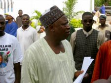

Our Victory Is A Challenge To Build Nasarawa State
Wednesday, April 23, 2003
Text of a Press Release by Alhaji (Dr.) Abdullahi Adamu, Executive Governor of Nasarawa State on his re-election as the Governor of the State after the 2003 Gubernatorial Election.
On Saturday, April 19, 2003 the Independent National Electoral Commission (INEC) conducted elections into the Office of Governor of Nasarawa state. The results of the elections under reference as announced by the Commission showed that you, the good people of Nasarawa state have reaffirmed your mandate on me to continue in office as the chief steward of the state for the next four years.
This victory is a reaffirmation of your trust in our leadership and a challenge to continue the work of building the State towards economic and social prosperity. This challenge to continue to steer the ship of state as your Chief Steward is both satisfying and humbling. It is for us a call to serve you more faithfully.
In this respect, on behalf of my running mate, Hon. Labaran Maku, our great party, the Peoples Democratic Party (PDP) and members of my campaign team, I wish to use this medium to express our gratitude to all the citizens of Nasarawa state who turned out enmasse to vote for us during the election.
We have noted the peaceful and orderly conduct of the elections in the state in spite of assumed threats to the contrary. We remain grateful to every citizen of Nasarawa state who stood up to vote for an agenda of freedom, liberty and progress. The massive support for the PDP is a demonstration of confidence in its programmes and we assure you that we will keep faith with these programmes.
We would also like to register our appreciation to officials of the INEC, security agencies and to all those associated with the exercise for the impartial and satisfactory performance of their duties in the course of the election. Through their performance, we are assured of the sustenance of democracy in Nigeria.
It is pertinent at this time to reaffirm our resolve to put smiles on the faces of the people of Nasarawa state. We would use every opportunity at our disposal to pursue programmes that will bring about the social and economic transformation of our state. Our programmes and policies over the next four years will focus on consolidating the foundations of a united, peaceful and prosperous state; a task we have already began. We are aware of your high expectations. As we have always promised, we would not fail you.
To all those who contested with us, we extend our hand of fellowship as we continue in the onerous task of building the State. We call on all citizens of Nasarawa state to now put the elections behind them as we jointly pool our resources for the building of a State of our dream.
Thank you and may the Almighty God bless us all.
Alhaji (Dr.) Abdullahi Adamu
Executive Governor
Nasarawa State
|